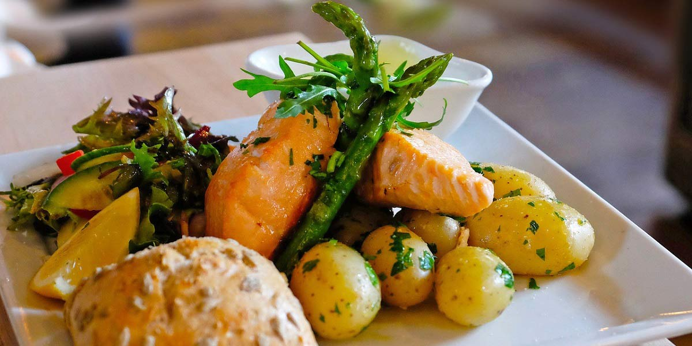

Poached Salmon
Recipe Specification
Ingredients List
| Ingredients | Quantity |
|---|---|
| Salmon Fillet | 1kg |
| White Onion | 1x1 |
| Lemon | 1x1 |
| Carrot | 1x1 |
| Celery | 2 stalks |
| Salt & Pepper | To Taste |
| Vegetable Oil | 30ml |
Yield: 4-5 portions
Preparation
- Debone salmon fillet and descale salmon skin. Cut fillet into 5 smaller fillets using a sharp knife.
- Zest and slice lemon.
- Peel and slice white onion.
- Peel and slice carrot.
- Wash and slice celery.
Cooking Instructions
- Place a wide and deep sauté pan over a medium/high heat.
- Add vegetable oil, onions, carrot, celery and lemon slices. Cook for 3-4 minutes.
- Add 2 teaspoon of salt and 1.5 litres of water to the pan, bring to the boil and reduce to the simmer for 5 minutes.
- Gently lower salmon fillet in to cooking broth and cook for 5-6 minutes.

Serving Suggestions
Poached salmon goes great with crushed new potatoes, steamed French beans and a Greek yoghurt dip.
Storing instructions
Allow to cool to room temperature and store in air-tight container before placing in the refrigerator. Consume with 4 days of making.
Reheating Instructions
Place in microwave for 1-2 muntes.